Compendium
Contents
Heavy Metal System
Advance Averazer
| Advance Averazer | |
| 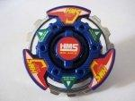 | |
| Numéro d'article : | MA-09 |
|---|---|
| Système : | HMS |
| Type : | Équilibre |
Advance Averazer est la première toupie de la série Advance et elle ne passe pas inaperçue : elle dépasse les attentes et démontre le mieux les différences existant entre les toupies plastiques et HMS. L?une des meilleures toupies de type Équilibre, jumelant une bonne attaque à une bonne endurance et une grande vitesse à une bonne capacité d?absorption d?énergie rotationnelle, cette toupie est un bon achat.
Advance Eterner
| Advance Eterner | |
| [[Image: |150px]] | |
| Numéro d'article : | MA-14 |
|---|---|
| Système : | HMS |
| Type : | Endurance |
Advance Eterner a plusieurs bonnes pièces : pour les combinaisons d?endurance, le Metal Sharp est le meilleur substitut aux Gyrostats ayant un roulement à billes; Advance Survivor peut servir autant dans les combinaisons d?absorption que d?endurance et sa capacité à renverser son cadre de métal pour s?adapter au sens de rotation de la toupie est une caractéristique ingénieuse et bien appréciée.
Advance Guardian
| Advance Guardian | |
| 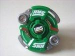 | |
| Numéro d'article : | MA-11 |
|---|---|
| Système : | HMS |
| Type : | Défense |
Advance Guardian a des pièces obsolètes : Advance Defenser produit une attaque latérale surclassée par d?autres Anneaux et Grip Sharp est pareillement surclassé en défense. Cette toupie a peu de valeur d?un point de vue compétitif.
Advance Striker
| Advance Striker | |
| 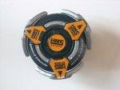 | |
| Numéro d'article : | MA-12 |
|---|---|
| Système : | HMS |
| Type : | Attaque |
Advance Striker, dans son ensemble, est très bien conçu. Son AA a une bonne attaque ascendante en rotation horaire, mais il est supplanté par les deux Anneaux les plus populaires (Circle et Samurai Upper), ayant pour conséquence qu?il est très peu utilisé en tournois, sauf pour ceux appliquant le règlement restrictif. La vraie force de l?Anneau est dans son attaque descendante et sa ascendante antihoraire, deux styles d?attaque ne bénéficiant que de très peu de pièces.
Son GS est une pièce très utile : sa petite taille, sa grande rapidité et son excellente durabilité en font une pièce de choix pour toute combinaison d?attaque et principalement pour les latérales, qui sont très peu nombreuses par rapport aux légions d?ascendantes. C?est une toupie que tout enthousiaste du type Attaque et tout bladeur compétitif se doivent de posséder.
Bloody Devil MS
| Bloody Devil MS | |
| Metal Satan | |
| 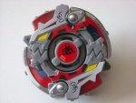 | |
| Numéro d'article : | MA-23 |
|---|---|
| Système : | HMS |
| Type : | Attaque |
Bloody Devil MS est une toupie prisée de nombreux bladeurs, mais dans son ensemble, elle n?est pas la plus utile : Devil Crusher a ses points forts, aucun cependant n'étant pas surclassé par de meilleures options; Shooter Change Alpha, bien qu?intéressant, n?est pas indispensable.
Si vous avez déjà amassé la plupart des toupies importantes du HMS et que l?occasion de l?acheter se présente, Bloody Devil MS est une toupie intéressante avec laquelle expérimenter. Ceci étant, Shining God MS a des pièces similaires qui surpassent celles de cette toupie d'un point de vue compétitif.
Dark Leopard MS
| Dark Leopard MS | |
| Metal Sweeper | |
| 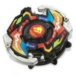 | |
| Numéro d'article : | MA-16 |
|---|---|
| Système : | HMS |
| Type : | Équilibre |
Dark Leopard MS fait partie de la série des mécanismes spéciaux et fut annoncé comme tel. Il est donc important de tenir compte du fait que cette, comme Phantom Fox MS, n?est pas conçue pour la compétition au même titre que Death Gargoyle MS ou Wolborg MS. Le Tornado Change est amusant et aussi la pièce la plus intéressante. Sa facilité d?utilisation devrait plaire aux nouveaux joueurs n?ayant pas d?expérience avec les techniques de lancers. Par contre, son AA et son DM ne partagent pas ces qualités et diminuent donc l?intérêt global de la toupie. Pour cette raison, Dark Leopard MS ne devrait être acheté que par les collectionneurs : ceux qui préfèrent les compétitions ou qui n?ont que peu de toupies HMS devraient s?en abstenir.
Death Gargoyle MS
| Death Gargoyle MS | |
| Metal Scream | |
| 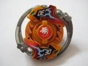 | |
| Numéro d'article : | MA-04 |
|---|---|
| Système : | HMS |
| Type : | Équilibre |
Death Gargoyle MS est depuis longtemps un favori des bladeurs simplement pour sa versatilité. Aucune pièce n?est inutile et chacune produit d?excellents résultats qu?elle fasse partie de la combinaison originale ou qu?elle soit combinée à d?autres pièces. Cette toupie amalgame plusieurs façons de jouer au Beyblade en un seul tout. Elle est également excellente pour pratiquer ses techniques de lancers. Tous ses atouts pris en compte, le Circle Upper demeure l?un des meilleurs Anneaux d?attaque jamais créés et une raison en soit de posséder cette toupie : tout bladeur devrait posséder plusieurs exemplaires de cette toupie.
Draciel MS
| Draciel MS | |
| Metal Shield | |
| 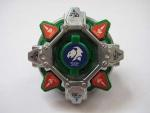 | |
| Numéro d'article : | A-125 |
|---|---|
| Système : | HMS |
| Type : | Défense |
Draciel MS, avec le recul du Metal Defense et la hauteur du Sharp Core, est facilement renversé. Des trois premières toupies HMS, elle est la plus faible, mais demeure tout de même un incontournable en sa version Takara : posséder un Circle Wide alourdi est extrêmement avantageux.
Dragoon MF
| Dragoon MF | |
| Metal Fantom | |
| 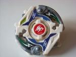 | |
| Numéro d'article : | Prix du RBA3 |
|---|---|
| Système : | HMS |
| Type : | Attaque |
Dragoon MF n?est certainement pas la meilleure jamais construite, même si en soit elle n?est pas mauvaise. Si vous êtes à court d?options, l?Upper Dragon peut remplacer l?Anneau d?une toupie d?attaque latérale ou ascendante et le Metal Weight Grip est une pièce intéressante à utiliser en lieu de GS tels que Grip Flat et Grip Flat (Ultimate Version).
Dragoon MS
| Dragoon MS | |
| Metal Storm | |
| 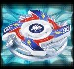 | |
| Numéro d'article : | A-126 |
|---|---|
| Système : | HMS |
| Type : | Attaque |
Dragoon MS est l'une des premières toupies du système HMS et son GS en demeure l?une des pièces maîtresses. Pour vaincre la meilleure toupie du HMS ? Wolborg MS ? le Grip Flat est un incontournable. Tout bladeur devrait posséder plusieurs copies de cette toupie.
Dragoon MS UV
| Dragoon MS UV | |
| Metal Storm Ultimate Version | |
| 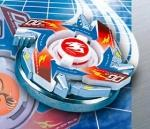 | |
| Numéro d'article : | MA-01 |
|---|---|
| Système : | HMS |
| Type : | Attaque |
Dragoon MS UV est sorti peu après Dragoon MS, ayant pour seule différence notable la modification du GS, laquelle permet d?augmenter considérablement la puissance d?attaque d?une combinaison d?attaque. Toutefois, cette toupie est devenue très rare et peut maintenant être difficile à acquérir. Si l?occasion se présente de l?obtenir, il pourrait être judicieux de ne pas la rater. Tout bladeur devrait posséder plusieurs copies de cette toupie.
Dranzer MS
| Dranzer MS | |
| Metal Spiral | |
| 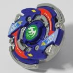 | |
| Numéro d'article : | A-131 |
|---|---|
| Système : | HMS |
| Type : | Équilibre |
Dranzer MS est une toupie d?équilibre polyvalente. Chacune de ses pièces a ses caractéristiques divisées entre plusieurs types et styles de toupies. Toutefois, malgré cette flexibilité, aucune de ses pièces n?est particulièrement efficace : Spiral Upper est simplement inutile; Circle Balance est complètement surclassé; et bien que le Manual Change Core puisse être utilisé dans des combinaisons d?attaque descendante, de meilleures options existent. Cette toupie ne devrait être acquise qu?à des fins de collection.
Driger MS
| Driger MS | |
| Metal Slash | |
| 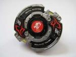 | |
| Numéro d'article : | A-124 |
|---|---|
| Système : | HMS |
| Type : | Équilibre |
Driger MS a marqué d?un excellent début la série HMS. La toupie offre un bon Anneau d?attaque, le Metal Upper, et une version HMS de la populaire base SG Semi-Flat. Cependant, ses pièces ont depuis été surclassées par d'autres, comme le Circle Upper et le Metal Change de Death Gargoyle MS, et le Metal Semi-Flat d?Advance Averazer, une version améliorée de son Gyrostat.
Einstein MS
| Einstein MS | |
| Metal Spring | |
| 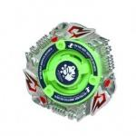 | |
| Numéro d'article : | |
|---|---|
| Système : | HMS |
| Type : | Équilibre |
Einstein MS n?est pas une acquisition nécessaire, mais le Metal Spring peut s?avérer utile, en particulier si vous n?avez pas accès aux toupies Jiraiya MS ou Magical Ape MS.
Gaia Dragoon MS
| Gaia Dragoon MS | |
| Metal Spike | |
| 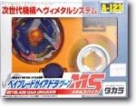 | |
| Numéro d'article : | A-123 |
|---|---|
| Système : | HMS |
| Type : | Attaque |
Gaia Dragoon MS est encore très facile à se procurer, même si elle est l?une des premières toupies HMS fabriquées et, donc, a peu de valeur de collection. Compétitivement, ses pièces sont toutes obsolètes. Il n?y a donc aucune raison d?acheter cette toupie.